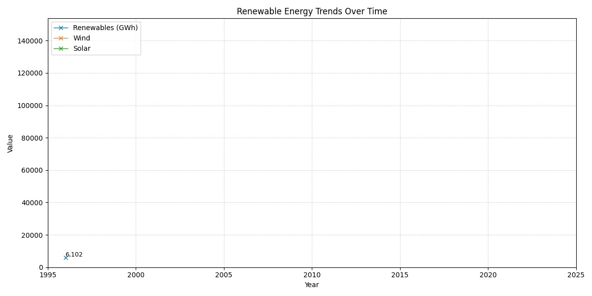

Introduction:
Like most people I will turn on my laptop and see my battery charging nicely, without thinking twice about what powers it or my life. Within this project I have begun to question where in the Uk does our energy come from and …………?
With rapidly accelerating global affairs and increasing climate pressures I wanted to find out how the UK produces energy and its overseas provision. One of my inspirations behind this project was Kate Morley, who produced the site I will reference later, in respect to my web scrape, and my father who shows great interest in these sorts of things and showed me the site himself.
My findings seem to suggest that we are moving away from coal as a source of energy provision and move towards renewables especially wind turbine production.
Electricity Generation over the past few decades:

# alter line graph to have updated monthly data for a cleaner and more detailed graphic (annual before monthly).
New data set from Electricity production and availability from the public supply system (ET 5.4 - monthly)
-MENTION THAT WE ARE LOOKING AT ENERGY PROVIDED BY MPPS (MAJOR POWER PRODUCERS) in the uk.
WHY IS THIS INTERESTING? Because MPPs are moving towards renewables but don’t seem to be generating much more monthly.
Insert pie charts and